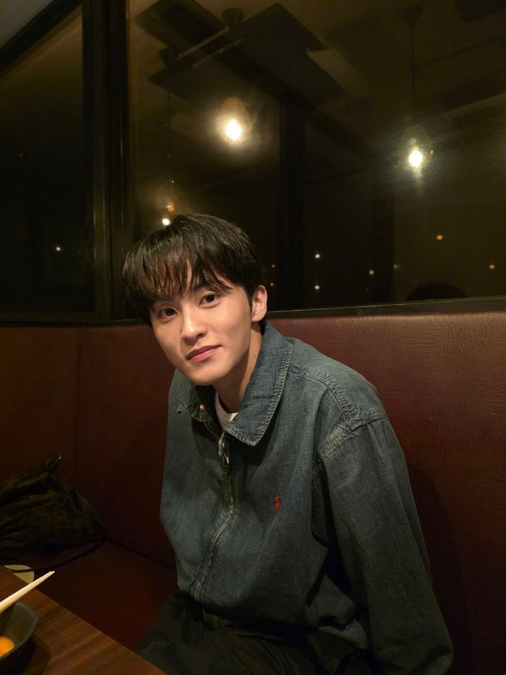

NCT DREAM boyband beranggotakan 6 orang yang debut sejak 2016 di bawah naungan SM ENT.
Debut pertama kali dengan lagu "Chewing Gum" yang dirilis pada 24 Agustus 2016 yang berhasil mencapai 1,6 juta views dalam waktu kurang dari 24 jam.
Saat pertama debut, NCT DREAM masi beranggotakan 7 anggota namum pada 8 April 2026 anggota tertua di grup yaitu Mark Lee memutuskan mengakhiri kontrak dengan SM ENT hingga seskrang NCT DREAM hanya beranggotakakn 6 orang

mantan anggota sekaligus anggota tertua dan Leader saat masih di nct dream. Lahir dan besar di kanada pada 2 Agustus 1999
Di kenal sebagai member paling pemarah yanng lahir 23 Maret 2000 di Tiongkok
Jabatannya sebagai Captain dan di kenal sebagai salah satu member terkuat dan memiliki tubuh yang kekar. Lahir pada 23 April 2000 di Incheon
Di kenal sebagai member paling jahil dan nakal namun selalu yang membawa keceriaan. Lahir 06 Juli 2000 di Jeju. Heechan juga meiliki suara yang sangat khas yang membuat nya memiliki ciri khas tersendiri
Member yang mempunyai suara nyaring dan memiliki tawa bak lumba-lumba yang sangat ceria. Lahir pada 22 November 2001 di Tiongkok
member termuda atau di kenal sebagai maknae kesayangan semua member yang memiliki hobi bicara dengan pohon. Lahir pada 5 Februari 2002 di Seoul
Populer di kalangan penggemar karena visualnya yang tampan dan uaranya yang manis dan juga salah satu member terkuat selain Jeno. Lahir pada 13 Agustus 2000 di Busan